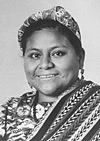

Rigoberta Menchú
 Líder indígena guatemalteca, Premio Nobel de la Paz en 1992.
Nacida en Chimel, el Quiché, en 1959. De origen humilde, es hija de un campesino que destacó por su actuación social en favor de los más débiles. Desde muy niña trabajó ayudando a sus padres en las cosechas de café, algodón y caña de azúcar en las fincas del sur del país. A partir de los 10 años participó en la actividad pastoral de Chimel junto a sus padres, líderes cristianos de dicha región. Nunca recibió una educación a causa de las precarias condiciones de vida de los indios quichés de Guatemala, herederos directos de los mayas que habitan en el noroeste del país.
Siendo todavía adolescente se marchó a la ciudad de Guatemala, donde trabajó durante dos años como empleada de hogar. En esta ciudad trabajó como sirvienta en el Instituto Belga-Guatemalteco, donde las monjas le enseñaron a leer y escribir. Pronto descubrió la importancia de hablar español para la población india y decidió aprenderlo para de poder defender los intereses de los indígenas.
En 1979 ingresó en el Comité de Unidad Campesina (CUC), la organización de masas más importante de Guatemala, fundada un año antes por campesinos indígenas y ladinos pobres del altiplano guatemalteco a raíz de los conflictos surgidos entre éstos y los terratenientes. En 1980 su padre murió quemado junto a otras 38 personas en el asalto de las fuerzas policiales guatemaltecas a la Embajada de España en la capital. La sede diplomática española había sido ocupada pacíficamente por campesinos y estudiantes para denunciar las violaciones de derechos humanos por parte del Ejército. Tres meses después, su madre fue secuestrada, torturada y asesinada, al igual que cuatro de sus hermanos. A raíz de esto, otras dos de sus hermanas huyeron a las montañas para incorporarse a la guerrilla. Rigoberta, amenazada de muerte, se exilió a finales de 1981 en México, donde reside desde entonces. A partir de ese momento comenzó a desarrollar una intensa labor en la búsqueda de ayuda para la defensa de los derechos humanos en su país ante diferentes organismos internacionales y gobiernos.
Fue la primera indígena en participar en el grupo de trabajo de las Naciones Unidas sobre pueblos aborígenes, en 1982. En 1983 apareció el libro Me llamo Rigoberta Menchú y así me nació la conciencia, biografía escrita en colaboración con la antropóloga latinoamericana Elisabeth Burgos-Debray, que fue traducida a varios idiomas. El antropólogo estadounidense David Stoll publicó en diciembre de 1998 un libro en el que cuestionaba la veracidad de algunas de las afirmaciones de esta autobiografía lo que llevó a intensos debates sobre la vida y obra de la activista indígena.